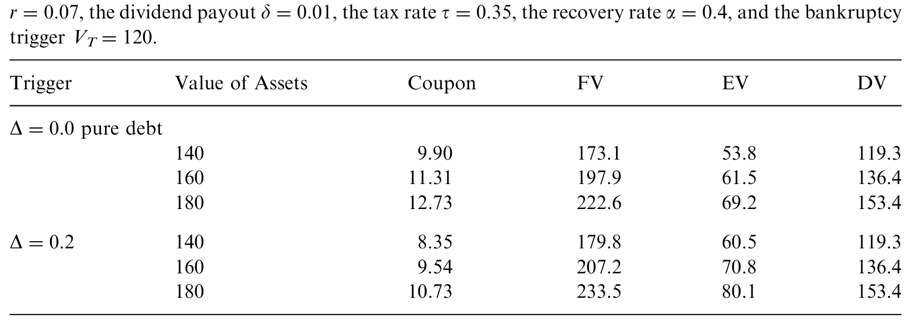
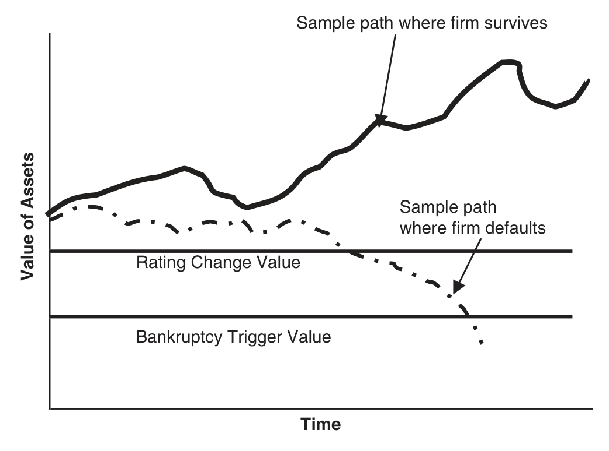
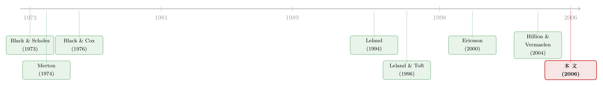

把「降级就还钱」写进债券契约：一个让股东自己戴上镣铐的故事
本文读的是 Bhanot & Mello (2006, Journal of Financial Economics)：当公司债里写进一条「评级一旦被下调，就得提前还掉一部分本金」的评级触发器 (rating trigger) 时，它能不能管住股东「债发完了再偷偷加风险」的冲动？答案是——能，但只对低到中等风险、且经营上有腾挪空间的公司有用；而且只有「让股东掏现金来还」这一种形式真正有效，靠变卖资产或抬高票息的触发器，反而会把公司推得离最优资本结构更远。
1 一条看上去像「自残」的条款
先讲一个让人有点摸不着头脑的现实。
2002 年 5 月，标普 (Standard & Poor's) 发了一份报告，点名 Tyco International、Vivendi Universal 等二十四家公司：它们的融资与交易协议里都埋着一类条款——一旦评级被下调到某个档位，公司就得立刻拿出数十亿美元来还钱。同一份报告里，另一位分析师补了一刀：安然 (Enron) 的破产，正是被这类触发器「点着」的，而其中很多触发器是不披露的、藏在协议字缝里的。
读到这里，一个自然的疑问会冒出来：公司为什么要主动给自己挖这么一个坑？
要知道，下调评级这件事，往往恰恰发生在公司日子不好过、现金最紧的时候。偏偏就在这个节骨眼上，契约逼着你掏出一大笔钱去还债——这不是雪上加霜、甚至「自残」吗？作者数了一遍：S&P 500 里有 17 家公司、共 42 只近期发行的债券带着这种评级触发条款（见原文 Table 1）。这些公司很多还是行业里的龙头。龙头企业，本不缺融资渠道，却偏偏选了这么一条「自缚手脚」的契约。
这就是本文要解开的张力：一条看似伤害股东的条款，为什么会被股东自愿写进合同，甚至能反过来抬高公司价值？
2 真正的病根：资产替代
要回答这个问题，得先把镜头对准公司金融里一个经典的「病」——资产替代 (asset substitution)，也叫风险转移 (risk shifting)。
故事是这样的：债券卖出去、钱拿到手之后，股东（或者替股东说话的经理）手里其实握着一个隐藏的期权。因为有有限责任 (limited liability)，公司一旦破产，股东最多输光手里的股权，再多的窟窿由债权人扛。于是一个「歪点子」就有了诱惑力——事后偷偷把公司的资产波动率 \(s\) 调高。波动一大，公司大涨时股东独享上行收益，大跌时反正损失封顶由债主买单。换句话说，提高风险，是把财富从债权人口袋里转移到股东口袋里。
这正是 Jensen 和 Meckling 半个世纪前就点破的债务代理成本（关于这条主线，可参见《债务这副药，为什么不能全吃？——重读 Jensen 和 Meckling 五十年》）。本文在 Leland (1994) 的结构化框架里，把这个「事后调风险」的动作显式地建模出来：股东可以在债发完之后，在一个区间内选择资产的瞬时标准差 \(s\)。而债权人是理性的，会预期到股东将来要这么干，于是在定价时就把这份「将被坑」的预期打进债券价格里。
这里的关键直觉：资产替代的代价，并不是「破产那一刻」才付的，而是从债券定价的第一天起就以更高的信用利差、更低的债券发行价被预收了。所以治理资产替代，本质上是在帮股东「赎回」这部分被预扣的价值。
接着，一个自然的问题是：有没有一种契约，能让股东在事前就可信地承诺「我不会乱调风险」？
这就轮到评级触发器登场了。它的设计妙处在于：触发与否，取决于一个外部第三方（评级机构）的判断，而触发支付的金额与时点都写死在合同里——事后谁也没法操纵。相比之下，像「死亡螺旋可转债 (death-spiral convertibles)」那种把转股价与市价挂钩的契约，反而会被市场参与者反向操纵（这正是 Hillion & Vermaelen (2004) 讲的故事，可参见《说好了「保护股东」，怎么反手把股价绞死了？》）。评级触发器的「不可操纵性」，是它作为承诺工具的天然优势。
3 模型：把触发器塞进 Leland 的世界
本文是一篇彻头彻尾的结构化模型 (structural model) 论文，所以我们值得把它的骨架一根根拆开看。
第一步：资产过程。 和 Leland (1994)、Leland & Toft (1996) 一样，无杠杆公司的资产价值 \(V(t)\) 服从一个常波动率的几何扩散：
$$\frac{dV(t)}{V(t)} = (m-d)\,dt + s\,dz(t)$$
这里 \(m\) 是资产的总期望收益率，\(d\) 是每期付给股东的资产比例（类似分红率），\(s\) 是资产的瞬时波动率，\(dz\) 是标准布朗运动的增量。在风险中性测度下，漂移率换成无风险利率 \(r\)。公司一旦资产跌到破产触发水平 \(V_B\) 就违约，债权人拿回 \(\alpha V_B\)（\(0<\alpha<1\) 是回收比例，股东一无所有）。
这套「公司随时可能跌破某条线就出局」的设定，是结构化模型里所谓首达时间 (first passage time) 的思路，与 Black & Cox (1976) 一脉相承——违约不只发生在到期日，而是资产路径第一次触线的那一刻。关于这种「随时可能倒下」的建模哲学，可参见《公司随时都可能倒下，期权定价却只盯着还债那一天》。
第二步：把触发器写进债券。 债务设为永续、每期付固定票息 \(C\)。新增的设定是：当资产价值从上方跌到评级触发水平 \(V_T\)（其中 \(V_0 > V_T > V_B\)）时，股东必须按面值回购一部分债务——具体是初始市值的比例 \(D\)（\(0\le D<1\)）。这笔钱靠增发新股来凑。于是债券价格是三块现金流的风险中性现值之和：(a) 公司活着时的票息；(b) 破产时的回收；(c) 触发时提前偿还的本金，以及此后减少的票息。
把积分求出来，得到本文的核心创新——带触发器的债券闭式解（原文 Eq. (3)）：
$$D(V_0) = \frac{\dfrac{(1-D)C}{r}\left[1-\left(\dfrac{V_0}{V_B}\right)^{-X}\right] + \alpha V_B\left(\dfrac{V_0}{V_B}\right)^{-X} + \dfrac{DC}{r}\left[1-\left(\dfrac{V_0}{V_T}\right)^{-X}\right]}{1 - D\left(\dfrac{V_0}{V_T}\right)^{-X}}$$
其中那个反复出现的指数 \(X\)，把利率、分红率和波动率全揉在了一起：
$$X = a + b,\qquad a = \frac{r-d-s^2/2}{s^2},\qquad b = \frac{\sqrt{(a s^2)^2 + 2rs^2}}{s^2}$$
一个容易栽跟头的符号点：上式里的 \(a\) 是指数的一部分（满足 \(a s^2 = r-d-s^2/2\)），和回收比例 \(\alpha\) 是两回事，论文原文不巧用了相近的记号。读公式时务必把它们分开。注意 \((V_0/V_B)^{-X}\) 这一项，本质上就是「从今天 \(V_0\) 跌到破产线 \(V_B\)」这一事件的（风险中性）现值因子——它是后面所有直觉的发动机。
把 \(D=0\)、\(d=0\) 代回去，这个式子就退化成 Leland (1994) 的纯债券情形——可见触发器只是在经典框架上「加装」了一个零件。
第三步：公司价值。 公司价值 = 无杠杆资产价值 + 税盾 − 破产成本。这一步最能看清触发器到底动了哪根筋，所以我们把它（原文 Eq. (6)）单独拎出来、逐项标注：
这条方程藏着触发器的「两面性」。一方面（看 a3），被提前还掉的那部分债务，它的税盾在 \(V_T\) 就断了——而 \(V_T > V_B\)，意味着这块税盾更容易丢，所以提高触发支付 \(D\) 会侵蚀税盾，这是成本。但另一方面，提前还债降低了在外票息、从而压低了内生的破产线 \(V_B\)，破产概率随之下降，破产成本（a4）和「将来被股东坑」的空间一起缩小，这是收益。
股东价值就是公司价值减去债券价值：\(E(V_0) = F(V_0) - D(V_0)\)。Leland (1994) 那个著名的结论——在没有触发器时，股权价值随风险递增（\(\partial E(V_0; D=0)/\partial s^2 > 0\)）——正是资产替代冲动的数学根源。触发器要做的，就是把这条单调上升的曲线掰弯。
4 反转：为什么「掏现金」有效，而「卖资产」「抬票息」无效
到这里，模型搭好了，但真正关键的一步，是看股东在装了触发器之后会怎么重新选择风险。于是反转出现了——不同形式的触发器，命运截然不同。
形式一：股东掏现金来还（refinancing trigger）。 这是有效的那一种。直觉链条是：股东若想偷偷加风险，就抬高了「资产跌到 \(V_T\)、被迫掏现金」的概率；而这笔现金注入，等于是股东事后被罚的一笔钱，且这笔钱补贴了被提前偿还的那部分债权人。同时，提前还债降杠杆、改善了财务状况、把公司推回最优资本结构附近。算下来，对于低到中等风险、且经营上有腾挪空间的公司，股东的最优选择反而是主动压低风险，以减少触到 \(V_T\) 的概率。这种政策对债权人和股东双双有利——触发器把蛋糕做大了，公司会自愿选它而非纯息票债。
形式二：变卖资产来还（liquidation trigger）。 这是会帮倒忙的那一种。同样是触发还债，但钱不是股东掏的、而是卖掉公司一部分资产凑的。问题在于：资产缩水后，没被提前偿还的那部分债务变得更危险——债务对资产的比例反而上升、破产概率上升。这把已经离破产更近的股东进一步推向激进：通过加风险，他更可能触发、卖资产还掉一部分债，而这笔卖资产的钱恰恰狠狠伤害了剩下没被保护的债权人。所以变卖型触发器加剧了股东—债权人冲突，把公司推离最优结构。
形式三：抬高票息（coupon-based trigger）。 这是最糟的一种，既不抑制资产替代，也不改善财务状况。触发后票息上升，等价于在公司资产价值已经很低的时候又加了一笔债，把公司推得离最优杠杆更远，破产概率上升，增加的破产成本盖过了多出来的税盾。作者顺手把这个结论推广到了银行贷款里越来越常见的业绩定价 (performance pricing) 条款——把票息与债务/EBITDA、杠杆率等财务比率挂钩。既然公司价值本就取决于这些比率，这种挂钩等价于把票息与公司价值挂钩，于是和「抬票息触发器」是同一回事——同样低效。
这一节的核心洞见，值得反复咀嚼：重要的不是「有没有触发器」本身，而是触发器背后的资本结构效应与融资形式。 同样叫「评级触发器」，掏现金的与卖资产的，方向完全相反。
作者用一系列数值算例把这些机制量化。基准情形是：\(V_0=150\)，\(r=0.07\)，\(d=0.01\)，税率 \(t=0.35\)，回收率 \(\alpha=0.4\)，\(s=0.2\)。若发纯息票债，使公司价值最大的票息是 \(C=10.43\)（取自 Leland (1994)），此时公司价值 \(191.84\)、债券价值 \(136.24\)、股权价值 \(55.60\)。在此基准上，作者比较了「为筹同样多的现金（\(136.24\)）而改发触发型债券」会发生什么——结论是要少发一些触发债，且如下表所示，触发器能在合适的参数下同时抬高债券与公司的价值。

Table 2: illustrates the benefits of a rating trigger using a numerical example
而图 1 则给了这套「双触发线」模型最直观的一张图：资产价值随时间游走，一条路径（粗线）始终安然待在评级触发线与破产线之上，另一条（虚线）先跌穿评级触发线、再跌穿破产线而违约。

Figure 1: Samplepathsof possibleasset values.Onesample path(inbold)illustratesafirmwhosevalue
最后，对于「掏现金」这种有效形式，作者还刻画了最优触发契约（触发水平 \(V_T\) 与触发支付 \(D\) 的配对）：当股东能选的最大风险越高，最优触发支付 \(D\) 越大，同时最优触发水平 \(V_T\) 越低。原因是更高的触发支付意味着更少的在外票息、从而更低的最优破产线——股东于是能把触发线压到「提前还债的好处」恰好等于「直接破产的边际好处」的那一点。
5 文献脉络
把这篇论文放回它生长的那条河里看，会更清楚它的位置。
源头是 Black & Scholes (1973) 与 Merton (1974) 开创的或然权益分析 (contingent claims analysis)——把公司的股权看成资产上的看涨期权、债务看成卖出看跌期权。Black & Cox (1976) 把违约从「到期日」拓展到「资产首次触线」，奠定了结构化方法 (structural approach) 的基石。
接着，一个自然的问题是：最优资本结构到底长什么样？Leland (1994) 与 Leland & Toft (1996) 给出了在内生破产下债券与股权价值的闭式解，成为后来一切「Leland 系」模型的母本。然后，资产替代、破产成本、税盾这些摩擦被陆续装进框架：Mello & Parsons (1992) 量化债务的代理成本，Ross (1997)、Ericsson (2000) 进一步把动态风险选择与最优杠杆、期限纳入，Morellec (2001) 则研究资产流动性与有担保债务（可参见《资产越「好卖」，公司反而越借不到钱》）。

本文正是站在这条线的交汇处：它把一个真实存在的债券契约条款（评级触发器）显式地塞进 Leland 框架，同时保留税盾、破产成本与资产替代，问的是「这条契约能不能当代理成本的解药」。与它几乎同时，Hillion & Vermaelen (2004) 研究的死亡螺旋可转债是另一种「治理工具」，但那种工具可被市场操纵——两相对照，更凸显了评级触发器「依赖外部评级、事后不可操纵」的契约价值。这条「实物/经营灵活性如何影响财务结构」的支线，也呼应着 MacKay (2003)、Morellec (2004)、Childs et al. (2004) 的工作（可参见《会变通的公司，到底是借得更多，还是更少？》）。
6 评论与延伸（Q&A + 研究方向）
(a) 几个可能的疑问
Q：触发器既然能抬高公司价值，为什么不是所有公司都用？
因为它只对「低到中等风险、且经营上有腾挪空间」的公司有效。高风险公司没法把风险压到让双方都获益的程度；而资产价值已经离触发线很近（财务脆弱）的公司，债券价格早已把「大概率触发」打了进去，触发器不会带来额外的现金外流，自然也就不再有抑制资产替代的力气——此时改资本结构的边际收益已经很小。
Q：这和普通的「提前偿还/赎回条款」有什么区别？
关键在于触发的依据是外部评级、且支付条款事前写死、事后不可操纵。普通赎回权由发行人相机决定，谈不上「承诺」；而把触发挂在评级这个第三方判断上，正好堵死了事后操纵的空间，才使它成为一个可信的承诺工具。
Q：「掏现金」和「卖资产」明明都是提前还债，凭什么效果相反？
差别全在「钱从哪来」。掏现金是股东额外注资、降杠杆、补贴债权人，把公司推回最优结构；卖资产则缩小了资产盘子，让没被保护的那部分债务更危险、破产概率更高，反而把已经逼近破产的股东推向更激进的风险策略。
Q：把票息与财务比率挂钩的「业绩定价」很流行，本文却说它低效，可信吗？
模型里的逻辑是自洽的：抬票息等价于在公司最虚弱时加债，推离最优杠杆、抬高破产概率，增加的破产成本盖过多出的税盾。而业绩定价把票息挂在债务/EBITDA、杠杆率上，由于公司价值本就由这些比率决定，它在效果上等同于把票息挂在公司价值上，因此与「抬票息触发器」同病相怜。
Q：这是纯理论模型，没有实证检验，结论靠得住吗？
这是它最该被打问号的地方。全文以闭式解加数值算例展开，Table 1 只是描述性地列出了带触发条款的公司，并没有做「装了触发器的公司事后风险/价值是否真的不同」的因果检验。模型预测（低风险+灵活性公司更爱用、掏现金型更有效）目前只是有待检验的假说。
Q：模型假设债务永续、且只在 0 时点发行一次，这有多大局限？
局限不小。现实里债务有期限、会滚动，触发支付靠增发新股来凑也假设了股权市场随时开门。一旦引入再融资摩擦、有限期限或股权发行成本，「掏现金」这条有效路径可能会打折——这恰恰是后续可以拓展的方向。
(b) 几个可能的研究问题与提案
1. 评级触发器的实证因果检验 - 【经济故事】模型预测：装了「掏现金型」触发器的公司，事后资产波动率上升更少、信用利差更低、离最优杠杆更近。这正是可以拿数据验的。 - 【可行性】中。可用 Mergent FISD / Bloomberg 债券契约数据识别带触发条款的债券，结合 Compustat 算事后波动率与杠杆。难点在识别：愿意装触发器的公司本就「低风险」，存在自选择。可考虑用评级机构方法论变更、或行业层面评级冲击作为外生变化做 双重差分 (difference-in-differences, DiD)。
2. 触发器与公司债流动性的交互 - 【经济故事】触发条款会在「临近触发」时制造一段定价高度非线性、信息敏感的区域，理论上会放大此时的逆向选择与流动性折价。带触发器的债券在评级下调前后，流动性是否系统性变差？ - 【可行性】中。用 TRACE 成交数据测带/不带触发条款债券在评级行动窗口附近的价差与价格冲击。挑战在于把「触发效应」从一般的评级下调效应里剥离出来，需要匹配同发行人、同期限的对照债券。
3. 外资持有人与评级触发条款 - 【经济故事】跨境债权人监督成本更高、信息更弱，理论上更依赖「评级」这种第三方、不可操纵的契约机制。外资占比高的发行人，是否更倾向于、也更受益于评级触发条款？ - 【可行性】中偏低。需要债券层面的持有人国籍数据（如部分新兴市场监管披露），与触发条款数据匹配，样本可能偏薄；识别上还要处理「发行币种/上市地」与持有人结构的内生纠缠。
4. 把模型动态化：滚动债务下的触发器 - 【经济故事】本文的债务是永续、一次性发行。若引入 Leland & Toft (1996) 式的有限期限与连续再融资，触发支付与滚动再融资会相互作用——触发器可能在滚动陷阱里变成「加速器」而非「刹车」。 - 【可行性】中。纯理论拓展，技术上在 Leland-Toft 框架里可做，难度在于触发支付与到期再融资同时存在时的闭式解或数值解。
5. 业绩定价 vs. 评级触发的契约选择 - 【经济故事】本文断言两者效果上等价且都低效，但现实中银行贷款偏爱业绩定价、公开债偏爱评级触发。是债权人类型（银行 vs. 分散债权人）、还是可操纵性差异在驱动这种分工？ - 【可行性】中。可用银团贷款 (DealScan) 的业绩定价条款 vs. 公开债的评级触发条款做对照，检验「债权人集中度/监督能力」是否预测了契约形式的选择。
7 我的判断
这篇论文的贡献是清楚而扎实的：它第一个把「评级触发器」这一真实契约条款，严格地嵌进了 Leland 式的最优资本结构模型，并得到了一个有纹理、可证伪的结论——不是「触发器好不好」，而是「哪种触发器、对哪种公司才好」。「掏现金有效、卖资产与抬票息有害」这个对比，干净利落，且对实务（尤其是把业绩定价判为低效）有直接含义。把承诺工具的价值落在「外部评级 + 事后不可操纵」这一点上，也提供了一个区别于死亡螺旋可转债的、很有说服力的契约设计视角。
但要诚实地说出它的软肋。第一，全文没有任何实证检验——Table 1 只是描述性清单，所有结论都是模型内部的比较静态，外部效度存疑。第二，识别（在它将来若做实证时）会很难：选择装触发器的公司本就非随机，自选择会把「触发器的因果效应」和「公司本身就低风险」缠在一起。第三，永续、单次发行、股权随时可增发的假设，恰好是让「掏现金」这条路径成立的关键，一旦放松，结论的稳健性要打问号。
后续我最想看到的，是把这套理论拖到数据面前对一次账：用债券契约数据库找出真正带触发条款的债券，借一个外生的评级方法论冲击做 DiD，检验「装了掏现金型触发器的公司，事后波动率是否真的更低、利差是否真的更窄」。如果数据点头，这篇 2006 年的理论就不只是漂亮，而是对的。
参考文献
- Black, F., Cox, J.C. (1976). Valuing corporate securities: some effects on bond indenture provisions. Journal of Finance 31, 351–367.
- Black, F., Scholes, M. (1973). The pricing of options and corporate liabilities. Journal of Political Economy 81, 637–659.
- Bhanot, K., Mello, A.S. (2006). Should corporate debt include a rating trigger? Journal of Financial Economics 79(1), 69–98.
- Childs, P., Mauer, D., Ott, S. (2004). Interactions of corporate financing and investment decisions: the effects of agency conflicts. Journal of Financial Economics 76, 667–690.
- Ericsson, J. (2000). Asset substitution, debt pricing, optimal leverage and maturity. Finance 21, 39–70.
- Hillion, P., Vermaelen, T. (2004). Death spiral convertibles. Journal of Financial Economics 71, 381–415.
- Leland, H.E. (1994). Bond prices, yield spreads, and optimal capital structure with default risk. Working paper, University of California, Berkeley.
- Leland, H.E., Toft, K.B. (1996). Optimal capital structure, endogenous bankruptcy, and the term structure of credit spreads. Journal of Finance 51, 987–1019.
- MacKay, P. (2003). Real flexibility and financial structure: an empirical analysis. Review of Financial Studies 16, 1131–1166.
- Mello, A., Parsons, J. (1992). Measuring the agency cost of debt. Journal of Finance 47, 1887–1904.
- Merton, R.C. (1974). On the pricing of corporate debt: the risk structure of interest rates. Journal of Finance 29, 449–470.
- Morellec, E. (2001). Asset liquidity, capital structure and secured debt. Journal of Financial Economics 61, 173–206.
- Morellec, E. (2004). Can managerial discretion explain observed leverage ratios? Review of Financial Studies 17, 257–294.
- Ross, M. (1997). Dynamic optimal risk management and dividend policy under optimal capital structure and maturity. Working paper, University of California, Berkeley.